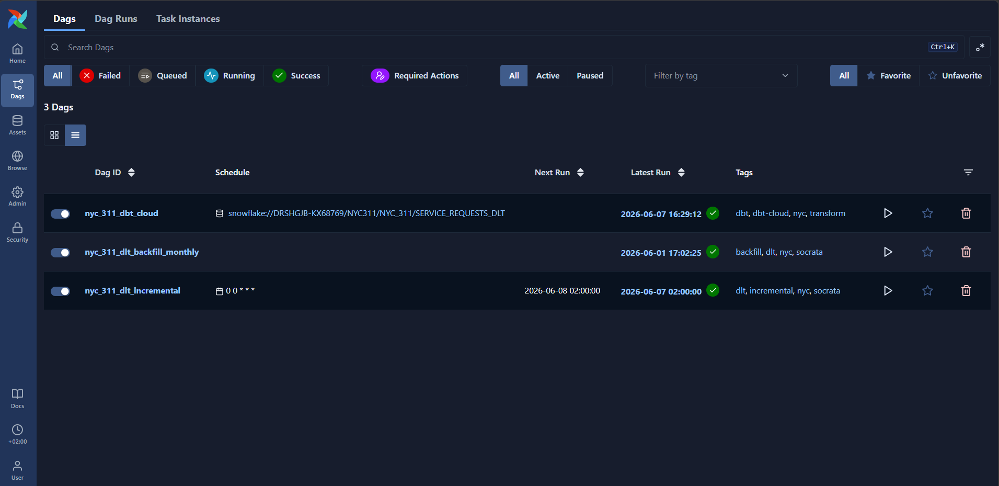
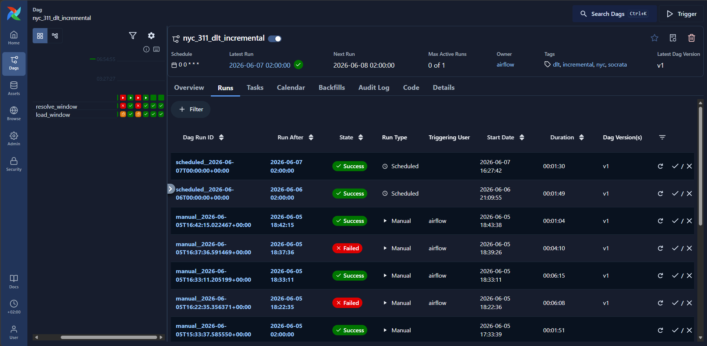
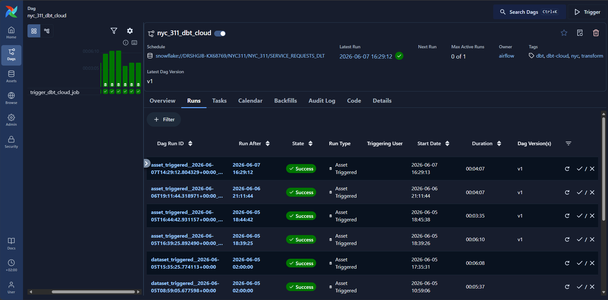
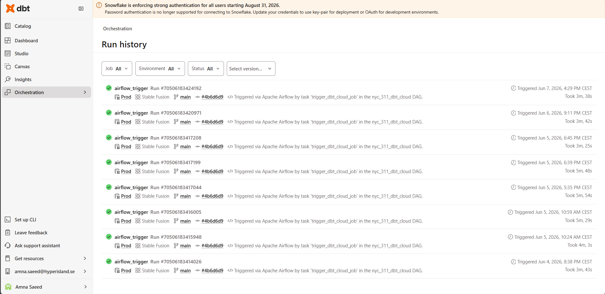
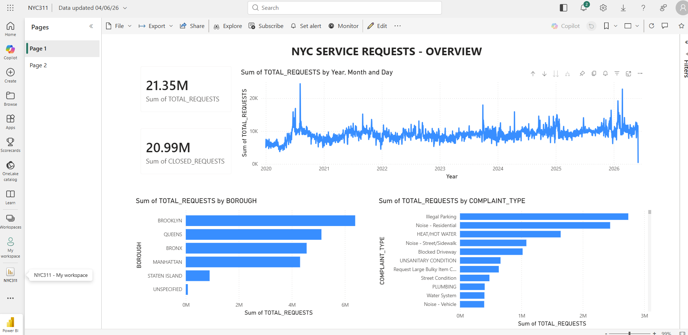
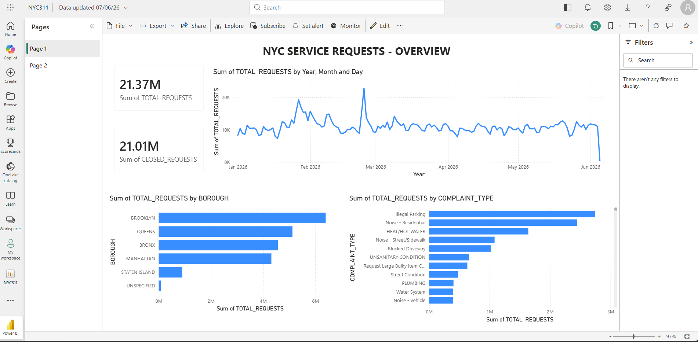

Ingesting New York City's live 311 complaint data, landing it in Snowflake, transforming it through a dbt medallion architecture, and serving insights in Power BI — fully orchestrated by Airflow.
Amna Saeed · 2026
NYC Open Data — 311 Service Requests · Socrata SODA 2.x API
Agency · Complaint type · Borough · Status · Created / closed date · Geolocation · Channel type
Classic lake-first cloud ingestion pattern.

Airflow UI — 3 DAGs, all successful · dbt_cloud triggered by dataset · incremental runs daily
Both dlt DAGs produce an Airflow Dataset on success. The dbt Cloud DAG is scheduled on that URI — successful load automatically triggers dbt, no cron coupling.

nyc_311_dlt_incremental — scheduled daily runs + manual backfill runs

nyc_311_dbt_cloud — triggered by the Snowflake dataset asset after each load
Standalone dbt project in dbt Cloud · two isolated environments
| Env | Target schema | Models land in |
|---|---|---|
| Dev | DBT_AMNA | DBT_AMNA_BRONZE/SILVER/GOLD |
| Prod | NYC_311 | NYC_311_BRONZE/SILVER/GOLD |
Both read the same raw source; +schema: config appends the layer suffix — dev & prod never collide.
Runs dbt deps → dbt seed → dbt build. Airflow blocks until the run finishes (wait_for_termination=True) so task status reflects real dbt outcome.
fct_service_requests has tens of millions of rows. Filtering on ingested_at > max(ingested_at) and merging on service_request_id touches only new or mutated rows each run.
Marts are small aggregates (counts & rates). Full rebuild each run is cheap and keeps them consistent — incremental logic would add complexity with no benefit.
NYC 311 uses placeholders for "no value" that aren't NULL:
'' Unspecified N/A 0 Unspecified Unknown
One macro trims whitespace and collapses all of them to NULL — called on many columns in silver. Write once, apply everywhere.
Failing rows persist to *_DQ_FAILURES schema for triage.
Each successful dlt load triggers a dbt Cloud job via the Airflow Dataset hand-off.

dbt Cloud — run history showing Airflow-triggered prod builds on the main branch · all green
Power BI consumes clean, tested, aggregated gold tables. All business logic lives in dbt (versioned, tested) — the BI layer stays thin and metrics stay consistent.


Power BI Service — 21M+ requests · daily trend · by borough & complaint type
Windowing on created_date is efficient, but a 311 request can be updated long after creation (e.g. opened in January, closed in June). Those late mutations fall outside the window.
Thank you — questions welcome.